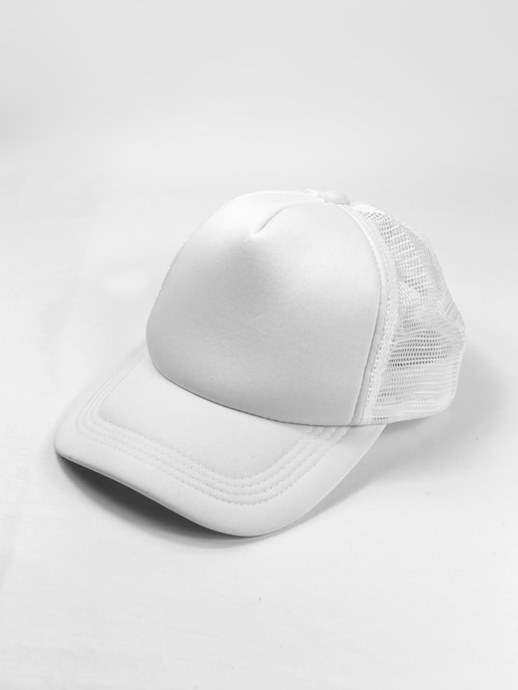
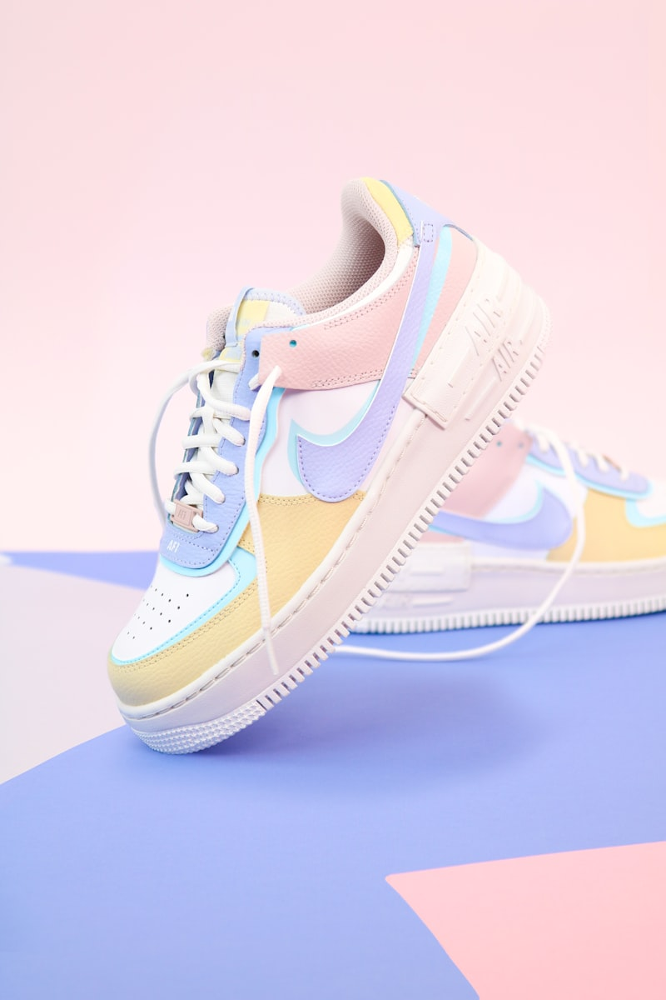

The Art of Selecting Technical Organic cotton Yarn Strands
How our workshop masters set thread thickness profiles, gauge spin parameters, and trace stitch lines.
Read Journal →Artisan Spinning: Organic Cotton and Wool Calibrations
Understanding melting limits, temperature spinning lamination scales, and cuff monogram seals.
Read Journal →
Atelier Guidelines: Washing and Caring for Fine Organic Socks
How to clean cashmere ribs, sterilize heels, and store stockings safely.
Read Journal →
The Science of Spinning Room Layouts for Acoustic Damping
Exploring machine vibration mounts, sound-absorption curtains, and calibration benches.
Read Journal →
The Evolution of Hand Tailoring in European Court Stockings
From heavy wool wraps and bone pins to flexible hand-linked cashmere socks.
Read Journal →Traditional Needle Clicking: Pattern Layout and Stitch Guidelines
How our designers map click curves, avoid stitch defects, and stamp cuffs.
Read Journal →
Styling Merino Wool Socks for Minimalist Winter Lookbooks
How to pair dark trousers, matching silk ties, and copper accents for streets.
Read Journal →
Atelier Metallurgy: Tempering Alloys for Horology Pliers and Needles
How our engineers forge copper pivots, wrap handles, and test sharpness levels.
Read Journal →
Apparel Packing: Cushioning Heavy Hosiery for Global Transit
How to fold thick wool collars, insert felt separators, and build pine shipping crates.
Read Journal →
Welt Tension and the Ergonomics of Tailored Sock Welt Bands
How custom padding weights and chest dimensions reduce wearer posture fatigue.
Read Journal →
Atelier Proofing: Compounding beeswaxes for Cuff Rib Protection
An analysis of natural pine resins, heating limits, and gold wax bottle seals.
Read Journal →
The Art of Packaging Hosiery Chests: Premium Atelier Presentation
How to wrap silk gowns, select cedar dividers, and build canvas garment bags.
Read Journal →